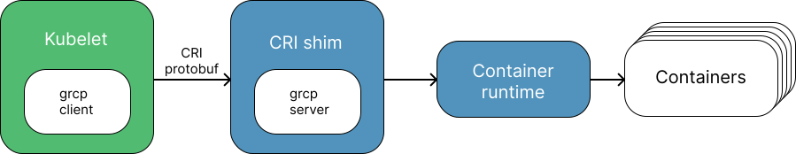

Kubernetes#
Sources
Hello minikube tutorial on official k8s site.
kubernetes crashcourse video on youtube.
Architecture#
K8s cluster generally consits of:
Control plane nodes: the brain of the cluster, contains control plane agents:
API server (kube-api): Provides an RESTful interface to manage the cluster.
The scheduler (kube-scheduler): assigns new workloads, such as pods to the nodes, which are typicaly workers.
Controller Managers. A watch-loop application that periodically checks the state of the cluster. There are two types of the controller managers: kube-controller-manager and cloud-controller-manager.
Key-Value Data Store (etcd): distributed key-value map.
Node Agent - kubelet.
Proxy - kube-proxy.
Worker nodes: machines on which pods are executed. A worker consists of the following components:
Container runtime: The tool to run containers. It could be Docker Engine, CRI-O, containerd, and Mirantis.
Node Agent - kubelet.
Proxy - kube-proxy.
Optional add-ons: dashborads, cluster-level monitoring, and logging.
A pod is the smallest unit in the Kubernetes. It literally represents an application. In the container runtime, it looks like a group of the containers that are deployed to handle a single application.
Proxy is a special kube-proxy application installed on each node, that manages the node’s the network.
In k8s temrs, a controller is a piece of software that periodically checks the status of the cluster and changes it according to it’s configuration.
Kubelet#
A Kubelet is a special process in each node, that receives pod information from the API server and runs it in the container runtime.
To communicate with a particular container runtime kubelete uses special abstraction service: “CRI shim”. CRI: container runtime interface.
The Kubelet uses a special abstraction service to communicate with a specific container runtime. This abstraction service hides the implementation details of the specific service.

The following CRI shims exist: cri-containerd, CRI-O, and cri-dockerd. Their names make it clear to which container runtimes they correspond.
Setup#
For local experimentation setup you can try following solutions:
Minikube single- and multi-node local K8s cluster, recommended for a learning environment deployed on a single host.
Kind Multi-node Kubernetes cluster deployed in Docker containers acting as Kubernetes nodes, recommended for a learning environment.
Microk8s Local and cloud K8s cluster for developers and production, from Canonical.
K3S Lightweight Kubernetes cluster for local, cloud, edge, IoT deployments, originally from Rancher, currently a CNCF project.
Minikube#
Minikube is local Kubernetes, focusing on making it easy to learn and develop for Kubernetes. Read more in start with minikube page. This is a tool that we’ll use to play with kubernetes.
Check more examples in the Minikube page.
Start the Minikube cluster using the minikube start command.
minikube start &> /dev/null
Use the command minikube status to check the status of your cluster.
minikube status
minikube
type: Control Plane
host: Running
kubelet: Running
apiserver: Running
kubeconfig: Configured
Use minikube delete to remove the current cluster of the minikube.
minikube delete
🔥 Deleting "minikube" in docker ...
🔥 Deleting container "minikube" ...
🔥 Removing /home/user/.minikube/machines/minikube ...
💀 Removed all traces of the "minikube" cluster.
Autocompletion#
To set up TAB completion, add the script printed to the standard output by minikube completion bash to the source: source <(minikube completion bash). To enable the completion when running the shell, add the command to the ~/.bashrc file: echo 'source <(minikube completion bash)' >> ~/.bashrc.
kubectl#
kubectl is a command line interface that allows you to interact with Kubernetes.
Check installation guide for kubectl. For me, using the ubuntu option snap install kubectl --classic worked well.
If you’re using minikube, you can access the kubectl using the command minikube kubectl -- <subcommands>. This will give you access to kubectl for minikube.
Note: Even for learning purposes, we’ll use a separate installation of the kubectl, as this installation closer to the real-world challanges.
For more information check:
The following cell shows the version of the cluster displayed using minikube kubectl -- version --client.
minikube kubectl -- version --client
Client Version: v1.34.0
Kustomize Version: v5.7.1
If you have successfully installed kubectl you will be able to run the following cell:
kubectl version
Client Version: v1.34.1
Kustomize Version: v5.7.1
Server Version: v1.34.0
Pods#
In k8s, a pod is an abstraction representing an application. In the container runtime, it is ususally represented by a set of the containers/volumes in the container runtime.
The are following operations that you can do with the pods:
Opearation |
|
|---|---|
Create |
|
Run |
|
Get pods |
|
Describe |
|
The following cell uses the command kubectl run to create and run the pod.
kubectl run nginx-pod --image=nginx:1.22.1
pod/nginx-pod created
The corresponding pod appears in the output of the kubectl get pods command.
kubectl get pods
NAME READY STATUS RESTARTS AGE
nginx-pod 1/1 Running 0 1s
Use the command kubectl delete pod <pod name> to delete the pod. The following cell deletes the pod that was created earlier and lists the pods.
kubectl delete pod nginx-pod
kubectl get pods
pod "nginx-pod" deleted from default namespace
No resources found in default namespace.
Labels#
A label is a mechanism for grouping resources. The core kubectl patterns that can be useful when working with labels are:
The
kubectl labelcommand allows to assign lables to the resource.Many
kubectlsubcommands have an-lflag that specifies a pattern for searching labels.
Check more in the Labels and Selectors section of the official documentation.
The following cell runs two pods, to which we will apply the labels.
kubectl run nginx-pod --image=nginx:1.22.1
kubectl run ubuntu-pod --image=ubuntu:22.04
Error from server (AlreadyExists): pods "nginx-pod" already exists
pod/ubuntu-pod created
The next cell adds labels to the containers runned earlier.
kubectl label pod nginx-pod hello=world
kubectl label pod ubuntu-pod hello=hell
pod/nginx-pod labeled
pod/ubuntu-pod labeled
The following cell selects the hello=world labeled containers.
kubectl get pods -l hello=world
NAME READY STATUS RESTARTS AGE
nginx-pod 1/1 Running 0 3m28s
In constrast, following code represents hello=hell labled containers.
kubectl get pods -l hello=hell
NAME READY STATUS RESTARTS AGE
ubuntu-pod 0/1 CrashLoopBackOff 5 (29s ago) 3m14s
kubectl delete pods nginx-pod ubuntu-pod
pod "nginx-pod" deleted from default namespace
pod "ubuntu-pod" deleted from default namespace
Pods contorllers#
There is a set of controllers that manages the pods running in the different clusters. There are following types of the built in k8s controllers:
ReplicaSet: Keeps a given number of pods of the same type in the cluster.
Deployment: Extends the RepcicaSet. Hides some details of configuration. It allows the use of a rolling update mechanism.
DemonSet: Deploys a single instance of the given pod on each node. Typical use is deploying monitoring, proxy, networking etc. daemons.
StatefulSet: Maintains a sticky identity for each deployed Pods. This is useful for managing applications that need persistent storage or a stable, unique network identity.
Check more in Pods controllers page.
Rolling update#
If you update the configuration of a Deployment, DaemonSets or StatefulSets, you’re supposed to run a process that will deploy new configuration. K8s have for that rolling update strategy: it keeps old replica set until it ensures that new version of the application is healthy and only after that it moves the payload to the freashly deployed version.
Versioons of the application are called revisions.
K8s keeps 10 previous revisions, allowing you are able to roll back to an earlier version.
Consider the rolling update process and how it looks like from the k8s perspective.
kubectl create deployment some-deployment --image=nginx:1.20.1 --replicas=2
deployment.apps/some-deployment created
It obviously creates the corresponding ReplicaSet.
kubectl get rs
NAME DESIRED CURRENT READY AGE
some-deployment-544dbb68bb 2 2 2 1s
Pods received the specified container version.
kubectl get pod -l app=some-deployment -o jsonpath='{.items[0].spec.containers[0].image}'
nginx:1.20.1
The following cell updates the image that is used for the deployemnt.
kubectl set image deployment some-deployment nginx=nginx:1.21.6
deployment.apps/some-deployment image updated
Surprisingly, there are now there are two ReplicaSets, but only one is used.
kubectl get rs
NAME DESIRED CURRENT READY AGE
some-deployment-544dbb68bb 0 0 0 23s
some-deployment-8fb6f4fcb 2 2 2 14s
One ReplicaSet corresponds to the initial deployment, while another corresponds to the updated revision.
Make sure that the application uses the updated version of Nginx.
kubectl get pod -l app=some-deployment -o jsonpath='{.items[0].spec.containers[0].image}'
nginx:1.21.6
kubectl delete deployment some-deployment
deployment.apps "some-deployment" deleted from default namespace